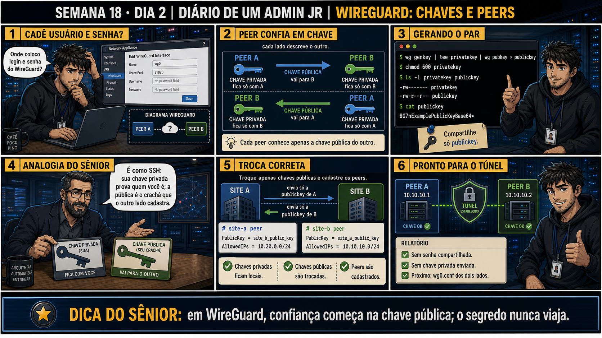

Semana 18 · Dia 2 | Nível Júnior — Redes
WireGuard: Chaves e Peers
em WireGuard, confiança começa na chave pública; o segredo nunca viaja
ANTES DE ALTERAR, OBSERVE. DEPOIS DE ALTERAR, VALIDE.
1. O chamado
#6730
PRIORIDADE BAIXA
10:10
aberto por: técnico configurando VPN pela primeira vez
host: site A e site B · serviço: autenticação WireGuard
"Cadê usuário e senha?"
Reflexo natural de quem nunca configurou WireGuard antes. Não existe login/senha na interface — como a confiança entre dois peers é estabelecida então?
💡 Passa o mouse nas palavras destacadas pra ver uma dica rápida — clica se quiser a explicação completa com analogia.
2. Antes de ver as opções — tenta responder
🧠 Recall ativo: na troca de chaves entre dois peers WireGuard, o que cada lado envia pro outro, e
o que cada lado guarda só pra si?
Cada peer envia SÓ a
chave pública
pro outro lado — que a cadastra na configuração dele. A
chave privada
fica SEMPRE só com quem a gerou, nunca é enviada. É exatamente o mesmo modelo do SSH — sua chave privada
prova quem você é; a pública é o crachá que o outro lado cadastra.
3. Questão comentada — clica numa alternativa
Você gerou um par de chaves com wg genkey | tee privatekey | wg pubkey >
publickey. Qual arquivo você deve enviar pro administrador do outro site pra ele cadastrar como peer?
💡 Analogia do Sênior para Fixar: O princípio fundamental de 02 WIREGUARD CHAVES PEER é como o alicerce de sustentação de um viaduto: garante que a estrutura de comunicação suporte alto tráfego sem colapsar.
4. Decodificador de conceitos
Clica em qualquer termo pra ver a definição completa e uma analogia do dia a dia:
5. Ferramentas e leitura da evidência
| Comando | O que faz |
|---|---|
wg genkey | Gera uma chave privada WireGuard aleatória. |
wg pubkey | Deriva a chave pública correspondente a partir da privada. |
chmod 600 privatekey | Restringe a leitura da chave privada só ao dono. |
$ wg genkey | tee privatekey | wg pubkey > publickey $ chmod 600 privatekey $ ls -l privatekey publickey -rw------- privatekey -rw-r--r-- publickey $ cat publickey 8G7nExamplePublicKeyBase64= --- troca correta entre dois sites --- # site-a peer [Peer] PublicKey = site_b_public_key AllowedIPs = 10.20.0.0/24 # site-b peer [Peer] PublicKey = site_a_public_key AllowedIPs = 10.10.10.0/24 --- Sem senha compartilhada. Sem chave privada enviada. ---
5.1 O painel 4 da prancha de hoje traz a analogia do sênior: "é como SSH: sua chave privada prova quem você é; a pública é o crachá que o outro lado cadastra"
Um colega, vindo de outra ferramenta de VPN com usuário/senha, acha essa analogia confusa.
Por que a analogia com SSH ajuda a entender o modelo de confiança do WireGuard,
em vez de pensar em usuário/senha tradicional?
💡 Analogia do Sênior para Fixar: Diagnosticar anomalias em 02 WIREGUARD CHAVES PEER é como o eletricista usando o multímetro no quadro de disjuntores: mede a passagem de sinal no ponto exato da falha.
5.2 "Se um peer souber a chave pública do outro, ele já consegue se conectar sozinho?"
Um colega acha que ter a chave pública de alguém já é suficiente pra iniciar uma conexão.
Por que ter apenas a chave pública do outro lado não é suficiente pra
estabelecer o túnel?
💡 Analogia do Sênior para Fixar: Aplicar as boas práticas de 02 WIREGUARD CHAVES PEER é como o protocolo de segurança da aviação: elimina pontos únicos de falha e garante previsibilidade operacional.
6. Procedimento profissional
- Gere o par de chaves em cada peer com wg genkey | tee privatekey | wg pubkey > publickey.
- Confirme as permissões: 600 na privada, restringindo a leitura só ao dono.
- Troque APENAS o conteúdo das chaves públicas entre os administradores dos dois lados.
- Cadastre a chave pública recebida no bloco [Peer] da configuração local.
- Nunca envie a chave privada por nenhum canal, mesmo interno ou "confiável".
7. Laboratório guiado — marca conforme for testando
⚠️ Este laboratório precisa de uma segunda máquina/VM real (ou de hardware/reboot que um terminal online não reproduz) — pratique no seu ambiente virtual. Não está disponível no terminal Killercoda.
Segurança: execute os testes apenas em VM descartável e confirme nomes de discos, hosts e arquivos antes de cada comando.
- Em duas VMs de laboratório (simulando dois sites), gere um par de chaves em cada uma.$ wg genkey | tee privatekey | wg pubkey > publickey
🔍 Detalhar esse comando
- wg genkey
- Gera uma chave privada WireGuard aleatória e imprime no stdout.
- tee privatekey
- Grava a saída no arquivo privatekey E, ao mesmo tempo, repassa adiante no pipe — assim você guarda a privada e ainda consegue derivar a pública numa única linha.
- wg pubkey > publickey
- Deriva a chave pública correspondente a partir da privada recebida pelo pipe, salvando em publickey.
Resultado esperado: arquivos privatekey e publickey criados em ambas.Por quê: cada peer precisa gerar seu próprio par independentemente — é isso que garante que a chave privada nunca precisa sair da máquina que a criou.Cilada comum: gerar as chaves numa VM e copiar o mesmo par pra outra "pra ganhar tempo" — cada peer precisa ter seu próprio par único, nunca compartilhado entre máquinas. - Confirme as permissões da chave privada com ls -l em ambas as VMs.$ chmod 600 privatekey $ ls -l privatekey publickey
🔍 Detalhar esse comando
- chmod 600 privatekey
- Restringe a leitura e escrita da chave privada só ao dono do arquivo — ninguém mais no sistema consegue lê-la.
- ls -l
- Lista os dois arquivos com permissões detalhadas, pra confirmar visualmente a diferença entre privada (600) e pública (644).
Resultado esperado: -rw------- (600) na privada, -rw-r--r-- na pública, em cada VM.Por quê: a chave privada é o que prova a identidade do peer — se qualquer outro usuário do sistema puder lê-la, a segurança do túnel inteiro fica comprometida.Cilada comum: achar que a permissão da chave pública também precisa ser restrita — ela é feita pra ser compartilhada livremente, só a privada exige 600. - Troque apenas o conteúdo das chaves públicas entre as duas VMs (copie e cole, ou transfira o arquivo .pub).$ cat publickey 8G7nExamplePublicKeyBase64=
🔍 Detalhar esse comando
- cat publickey
- Imprime o conteúdo do arquivo publickey no terminal — só pra copiar o texto e enviar ao outro administrador, nunca use cat em privatekey pra esse fim.
Resultado esperado: cada VM tem a chave pública da outra, sem nunca ter tocado na privada alheia.Por quê: é como SSH — a chave privada prova quem você é, a pública é o crachá que o outro lado cadastra; só o crachá circula entre os dois administradores.Cilada comum: transferir o arquivo errado (privatekey em vez de publickey) — releia o nome do arquivo antes de colar ou transferir qualquer conteúdo de chave.🧑🏫 Aqui entra o Mentor (em breve): se você acidentalmente copiar a chave privada em vez da pública, este é o ponto onde o chat com o Sênior-IA vai ajudar no protocolo de rotação de chave. - Cadastre a chave pública recebida no bloco [Peer] de cada configuração local.# site-a peer [Peer] PublicKey = site_b_public_key AllowedIPs = 10.20.0.0/24 # site-b peer [Peer] PublicKey = site_a_public_key AllowedIPs = 10.10.10.0/24
🔍 Detalhar esse comando
- [Peer] PublicKey
- A chave pública recebida do OUTRO lado — é ela que identifica criptograficamente quem tem permissão de estabelecer o túnel com esta máquina.
- AllowedIPs
- Faixa de IPs associada a esse peer — usada tanto como rota (o que enviar pra ele) quanto como filtro (o que aceitar vindo dele).
Resultado esperado: arquivo de configuração com PublicKey do outro lado presente.Por quê: a confiança precisa ser mútua — cada lado precisa ter cadastrado a chave pública do outro como peer autorizado; só ter a chave pública sem estar cadastrado do lado dele não basta.Cilada comum: cadastrar a própria chave pública no bloco [Peer] por engano, em vez da chave pública recebida do OUTRO lado — o [Peer] sempre descreve quem é o outro extremo do túnel. - Documente a tabela de peers padronizados — reproduzindo o painel 6 da prancha de hoje.Resultado esperado: relatório com confirmação de que nenhuma chave privada foi compartilhada.Por quê: documentar reforça o protocolo — nunca enviar a chave privada por nenhum canal, mesmo interno ou "confiável".
8. Validação e encerramento
- Cada peer gerou seu próprio par de chaves independentemente.
- Apenas chaves públicas foram trocadas entre os administradores dos dois lados.
- A chave privada de cada peer tem permissão 600, nunca compartilhada.
- A confiança mútua foi estabelecida, com cada lado cadastrando a chave pública do outro.
Rollback e limites
Gerar um novo par de chaves é uma operação simples e reversível — se uma chave
pública for cadastrada errada, basta corrigir a entrada no bloco [Peer]. O cuidado real e irreversível é a
chave privada: se ela vazar, o protocolo correto é rotacionar (gerar par novo), nunca só "tentar esconder de
novo".
💡 Sobre repetição espaçada: "chave privada nunca sai da máquina" conecta
diretamente com a Semana 16 (chaves SSH, mesma disciplina) — o mesmo princípio de identidade criptográfica
aplicado a uma ferramenta diferente. O Anki vai conectar os dois.
9. Resposta final
Alternativa correta: A. Nesta aula, o arquivo certo pra enviar foi
apenas o conteúdo de publickey — nunca a privatekey. O ponto central do caso é este: em WireGuard,
confiança começa na chave pública; o segredo nunca viaja.
🔓 O que você desbloqueou hoje
Capacidade de gerar e trocar chaves WireGuard com a mesma disciplina de
segurança já aplicada ao SSH. Amanhã você configura o primeiro túnel de verdade entre dois sites, e aprende
por que cada lado precisa reconhecer o outro — um túnel não nasce de configuração solitária.